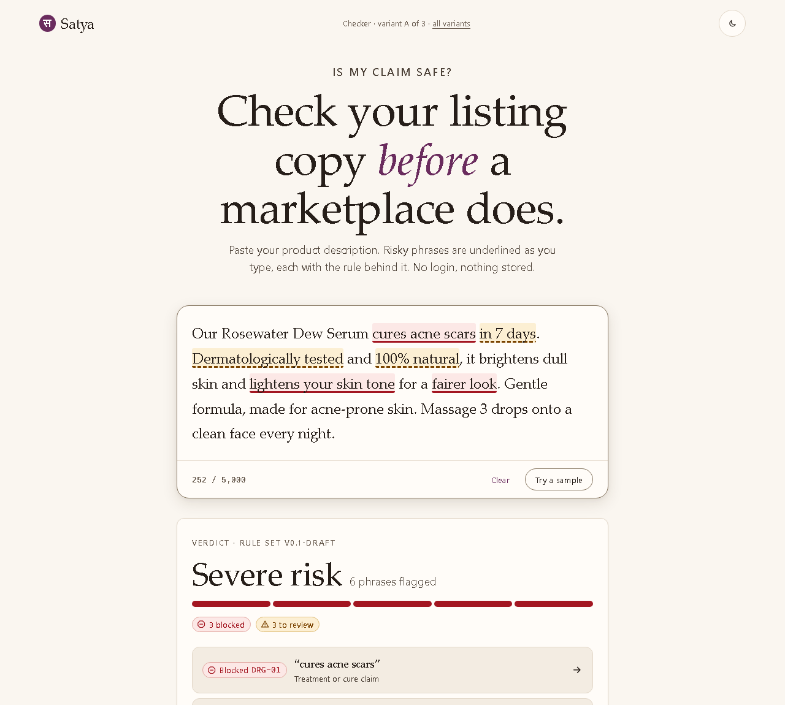
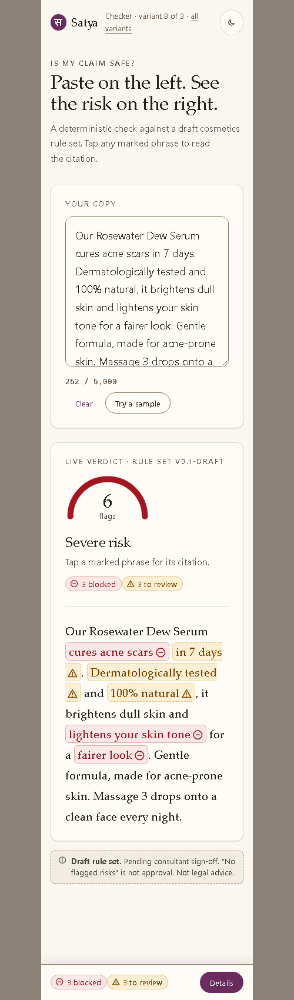
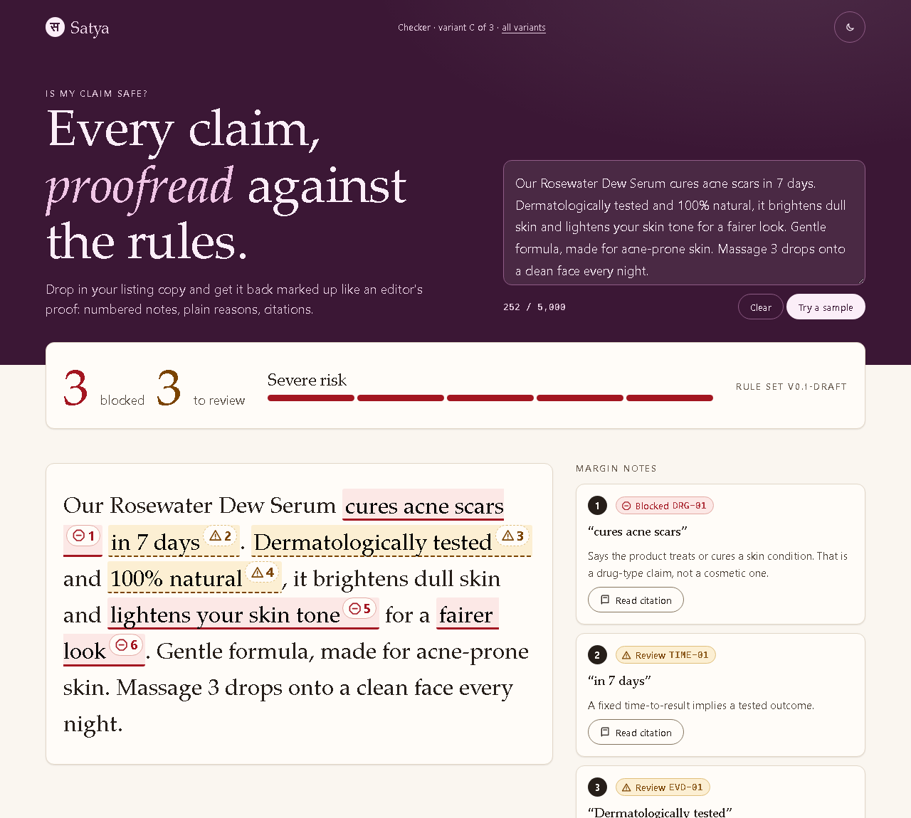
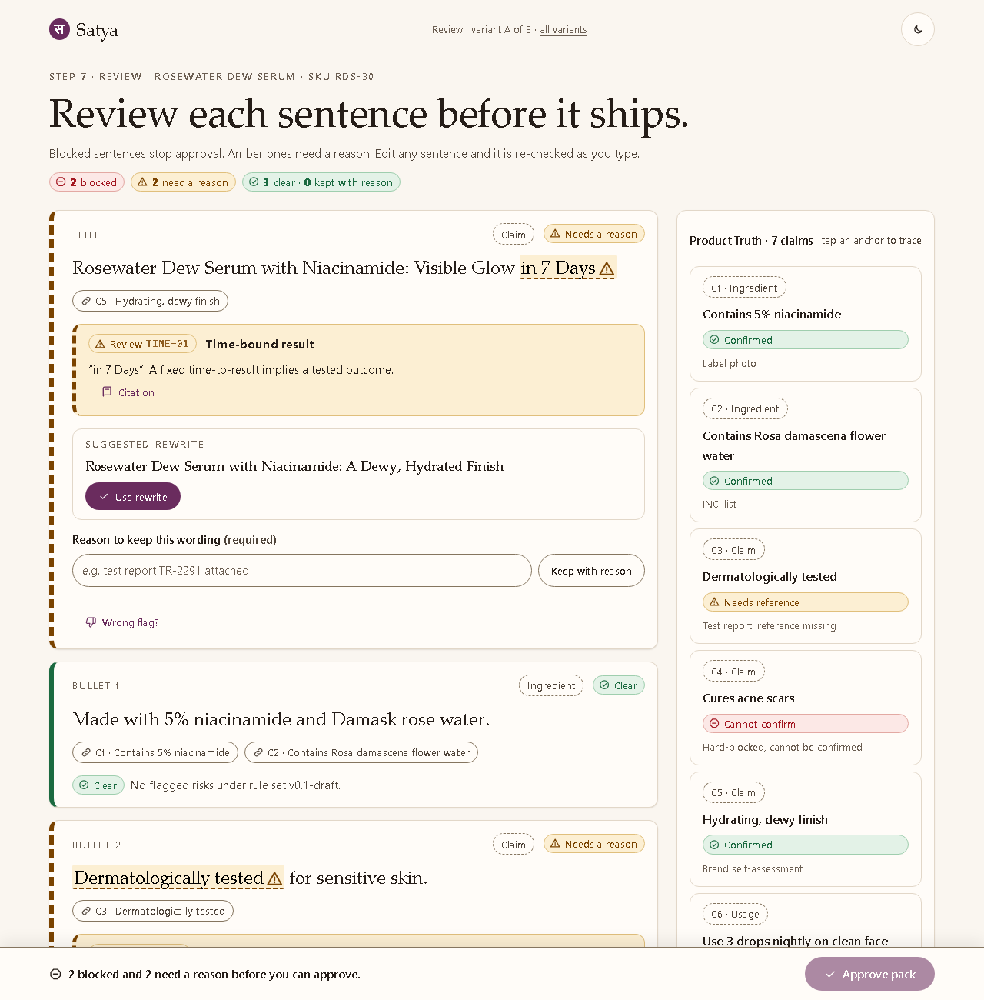
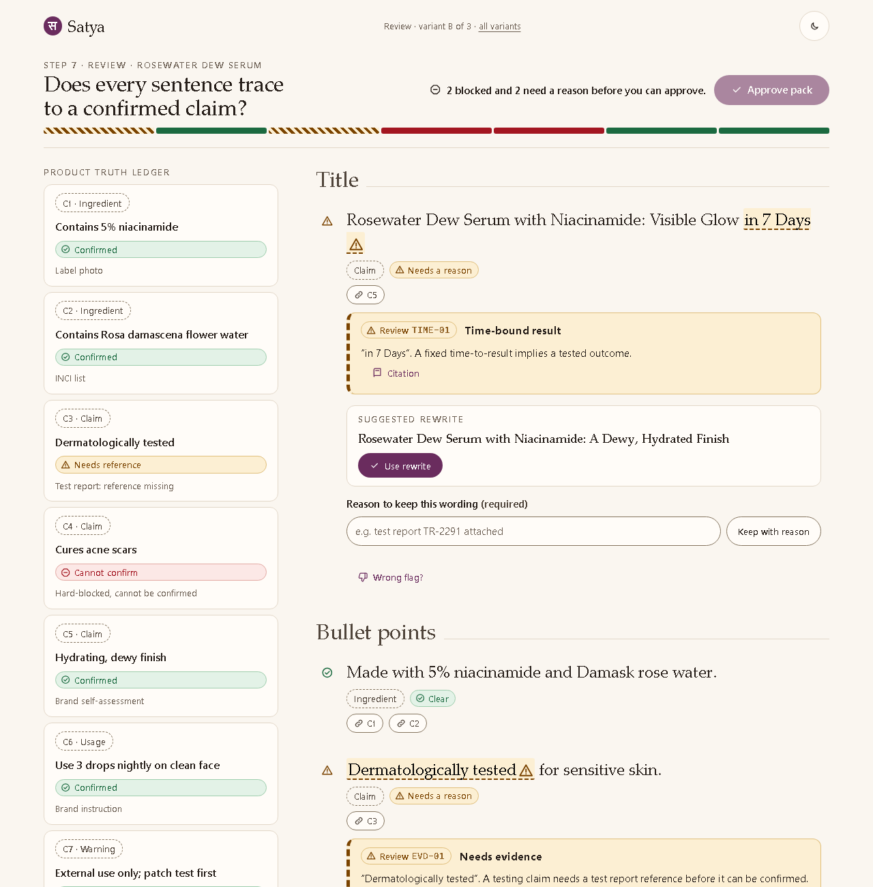
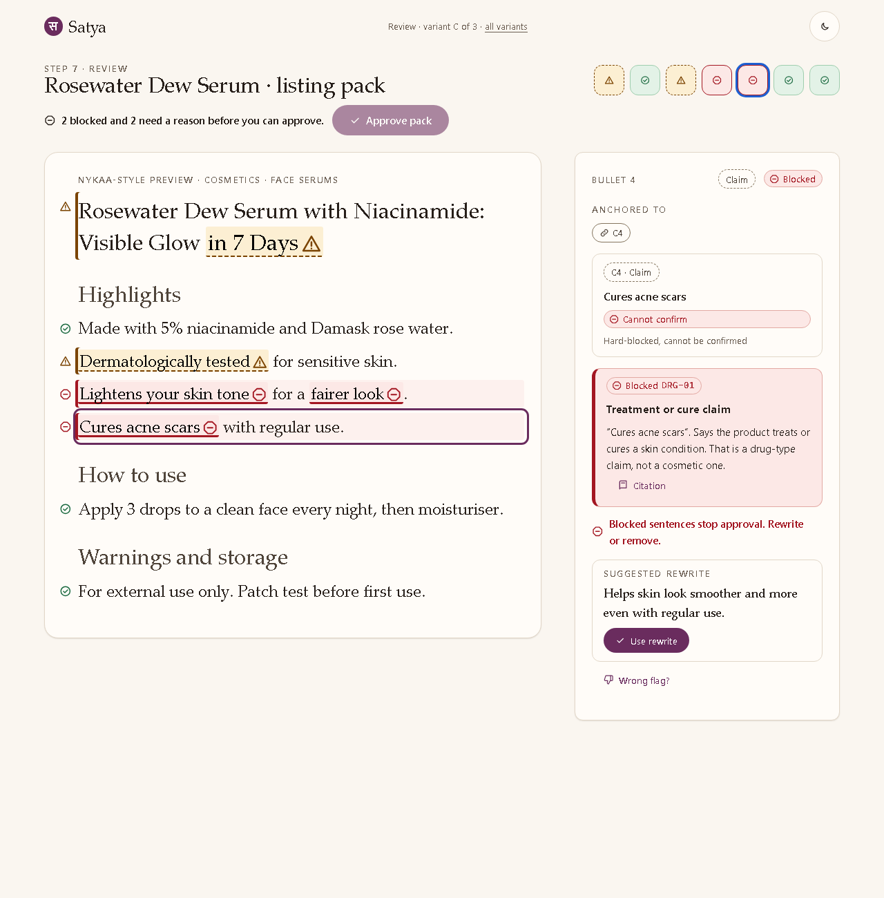
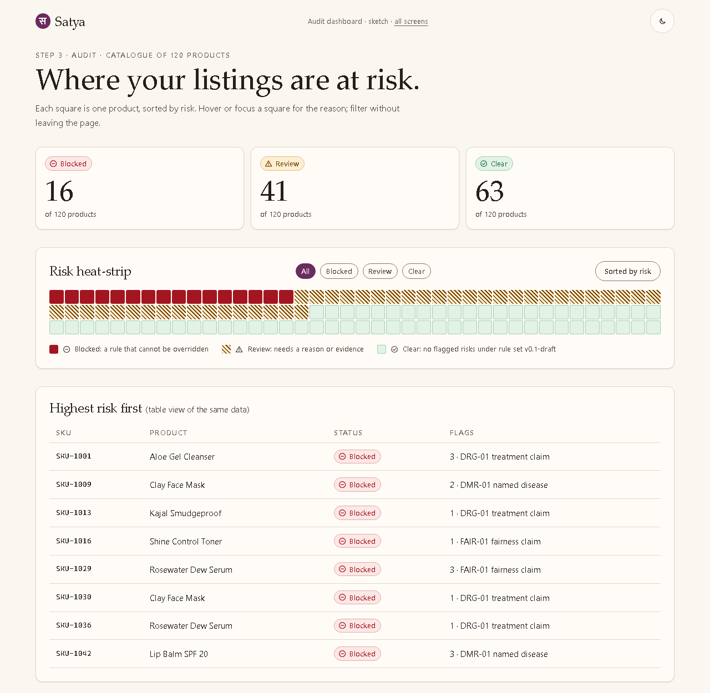

A · Editorial Paper
One calm column. Underlines draw in place as you type; verdict card rises below.
Open ASAT-7 · design drafts · for board review
Static, local-only prototypes of the public checker and the review screen, plus a heat-strip sketch. Everything shares one token set. All six screens are live: paste or edit text and the mock rules re-check it. No variant is recommended here; the trade-offs are in COMPARISON.md. Pick one per screen in the separate decision task.

One calm column. Underlines draw in place as you type; verdict card rises below.
Open A
Workbench: input left, live gauge and clickable annotated read-out right.
Open B
Plum hero, big counters, copy returned as an editor's proof with numbered notes.
Open C
One card per sentence; fix lives in the card; Product Truth in a side rail; bottom approval bar.
Open A
Evidence-first: claim ledger beside the copy; anchors cross-highlight; sticky approval gate.
Open B
Reads like the live product page; select a sentence and an inspector explains and fixes it.
Open CBuild-ready specs from the board's pick. Spec index · State gallery at 360px · Self-critique
Tokens, type, space, motion and component inventory, light and dark.
Open specimen design-system.md
One square per SKU, sorted by risk, with filters, tooltip and a table view.
Open sketchAll rule text, sources and sample data are illustrative drafts. Regulatory content stays draft until consultant sign-off (plan P20). Nothing here says a listing is compliant.